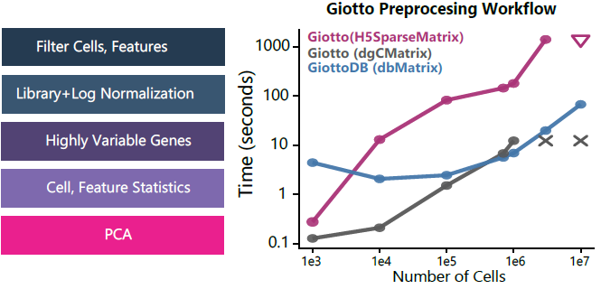
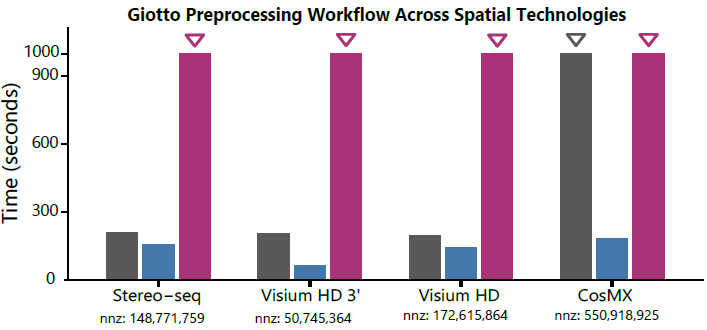

Benchmarks
Benchmarks.RmdPerformance Benchmarks of GiottoDB
These benchmark summaries compare a standard Giotto preprocessing
workflow using GiottoDB dbMatrix-backed expression data against
in-memory dgCMatrix and file-backed
H5SparseMatrix backends. Triangles denote runs that reached
the 1,000 second timeout limit; x marks denote
out-of-memory (OOM) failures.

Giotto preprocessing workflow runtime across
simulated dataset sizes.
The same workflow was also benchmarked across full spatial technologies to assess end-to-end runtime on real input matrices.

Giotto preprocessing workflow runtime across
spatial technologies.